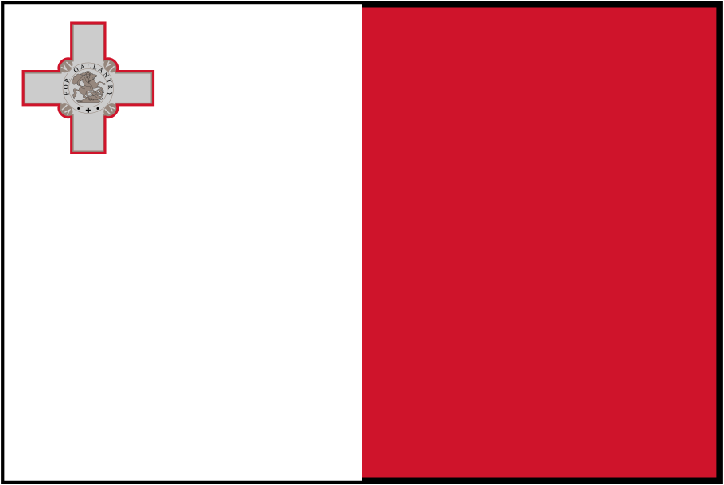

Religion Section
"The religion of Malta is the Roman Catholic Apostolic Religion" - Constiution of Malta, Section 2:2
Original Articles
 St Paul in Malta This article talks about St Paul's prescence in Malta, as outlined in the Acts of the Apostles. Written by Julian on December 11th 2021.
St Paul in Malta This article talks about St Paul's prescence in Malta, as outlined in the Acts of the Apostles. Written by Julian on December 11th 2021.
Web Resources
-  Maltese Prayers A list of common Catholic prayers, written and narrated in the Maltese language.
- Laikos A Catholic website in the Maltese Language.
- 1996 Maltese Bible Translation Full translation of the bible in Maltese. Aprocrypha is also included.
- 2020 Maltese Bible Translation A newer Maltese bible translation.
- Il-Katekiżmu tal-knisja Kattolika Full translation of the Catechism of the Catholic Church in Maltese.
- Imitazioni ta Cristu Full translation of Thomas à Kempis' Imitation of Christ, in the Maltese language.
- Archdiocese of Malta - Youtube Channel Contains frequent live masses, said in the Maltese language
- Diocese of Gozo - Youtube Channel Contains frequent live masses, said in the Maltese language. Based in Gozo.
- / Father Julian's Blog A blog written by Maltese born Catholic priest, Father Julian. Good insights into Malta, Christianity and life.
- Father Rob Galea A Maltese Catholic priest, and singer!
- Fr Hayden - Rahamim A Maltese Catholic priest, who conducts various sermons, in the Maltese language.
- / Joe Zammit Maltese Catholic youtube channel, focusing on the life of Saint John Bosco. Has a seperate channel, with Maltese language videos
- Biography of St George Preca Short biography on St George Preca, a Maltese saint, well known for founding the 'Society of Christian Doctrine' (M.U.S.E.U.M.)
- The Lord’s Prayer: the Maltese Semitic version and its historical origins Really interesting article by Simon Mercieca, that talks about the historic presence of Syrians in Malta, and their semitic language that influenced the Lord's Prayer in Maltese.